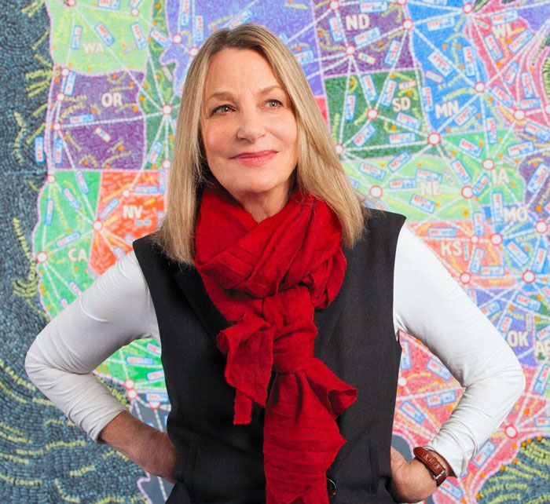
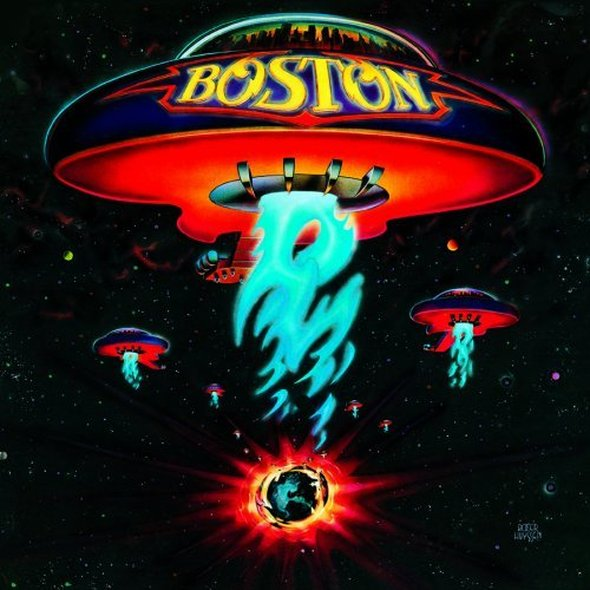

Paula Scher born 0ctober 6, 1948 in Washington D.C. (Famous Graphic Designers, n.d.) is an incredibly influential New York based American contemporary graphic designer and artist, famous for the way she manages to fuse contemporary pop culture with fine art in her work. I’m sure that myself and many can agree that she has played a major role in revolutionizing the graphic design industry for over four decades now. Scher has a great passion for typography and this is very much reflected in her work. She went to the Tyler School of Arts to study illustration and it was there that she fell in love with typography. Her use of type goes beyond contemporary graphic design as she also paints with words.
Scher has been a partner in the New York Pentagram office since 1991 and was the only woman partner until Lisa Strausfeld was made partner in 2002 (Roberts, 2015). As a young female designer, I find it inspiring that Scher has achieved so much well deserved recognition, particularly in such a heavily male-dominated industry.
By reflecting on the different areas of her work, I will set out why she is one of the most influential and enduring graphic designers of recent decades.
Fig.1. Paula Scher
The Public Theater is a cultural institution based in New York (Lippert, 2019) that has championed colourful artistry and inclusivity since the 1960’s. Paula Scher has been designing for The Public Theater since 1994. Her first project for The Public came after joining the New York Pentagram office and was to create an identity for the theatre. She mentioned in her episode of the Netflix documentary series, ‘Abstract’ (Abstract: The Art of Design, 2017) that the inspiration for the design of the Public Theater identity came when she was looking through her favourite book on American wood type. She came across a set of R’s that went in a line from the skinniest width to widest and was inspired to take a similar approach to the letters of PUBLIC. This is what became the iconic identity for the Public Theater.
Scher had created an identity that is vibrant, dynamic, easily recognizable and perfectly represents the Public Theater for what it is; an “artist-driven, radically inclusive, and fundamentally democratic” (The Public, n.d.) New York based cultural institution. The bold sans-serif type and simple yet sharp images reflect the street typography of New York and the energy of their productions (Lippert, 2019). This identity won Scher the Beacon Award for integrated corporate design strategy in 1996.
Fig.2. The Public identity
In 1995 Scher, with Pentagram designed a set of iconic posters for The Public Theatre’s production of Savion Glover’s “Bring in Da’ Noise, Bring in Da’ Funk” (Pentagram, n.d.). These posters featured the same wood typefaces as the identity of The Public she had designed previously (Pentagram, n.d.). In these posters, the typography surrounds the tap artist and has a very loud, bold and urban look, in keeping with contemporary culture of the time. You might even say that the typography is noisy, and you’d be right. This was deliberate and done to reflect the energetic experience that the show would provide.
The posters do this by creating a dynamic visual experience that provokes an intrigue in the show being advertised. This likely why the style was emulated so much by other theatres. This was the first time that The Public’s posters would be seen all over the streets of New York. Since then, The Public’s advertising has continued to have a notable presence. This blocky typographic style essentially changed the face of theatre advertising and could now likely be considered as the typeface of New York city itself.
This is a clear example of Scher’s influence. She’s very much a trend setter. As The Public’s typographic style has been so widely mimicked, their campaigns have to regularly change as a means of staying fresh in such a competitive market full of copy-cats. Scher continues to do amazing work for the Public Theater and I personally love the vibrant energy that her posters exude.
Fig.3. "Bring in 'Da Noise, Bring in 'Da Funk" poster
Long before Scher became a Pentagram partner she had a job designing record covers for CBS and Atlantic records in the 70’s. She worked with CBS for 8 years producing over 150 album covers a year for a diverse range of artists including Eric Gale, Bob James, Leonard Bernstein, Roger Dean and Boston (Famous Graphic Designers, n.d.). She has earned a total of four Grammy nominations for her designs which is no surprise as her covers manage to be incredibly imaginative and smart while also being accessible and easily understood. Although I'm sure that the designers working in this industry today wouldn’t have as much creative control as she had back then, the influence her approach has had on designing for the music industry is undeniable. It was based very much on working with photographers and illustrators to interpret the music in an almost poetic and symbolic way as opposed to just slapping a plain image of the artist on the cover.
It seems to me that working in this industry is where she really began to infuse contemporary pop culture into her designs.
“As long as I’ve been practicing design, I have been most obsessed with the connection between the work I create and its public. It began when I was a record cover designer in the 70s, working in an area of pop culture where audiences made a connection between graphic design and music.”-Paula Scher (Williams, 2019)
Fig.4. Boston - Boston (1974)
Scher has designed and remade a plethora of identities for a vast range of well-known brands aside from The Public Theater. These include Citibank, Tiffany & Co., Microsoft and CNN all of whose branding is both iconic and easily recognisable. She has also developed branding systems, promotional materials, environmental graphics, packaging and publication designs for an incredibly large variety of clients (Pentagram, n.d.). It is evident to me from the visibility of her branding work, not only in New York but in cities around the world, that Scher has a distinct talent for creating designs that become a part of the environment. Ordinary people, going about their daily lives, unconsciously engage with her work showing that its influence is broader than the design field. People automatically recognise the Microsoft and CNN brands, for instance, and do not need to be told who the corporation is when they see it. I can see that this integration and engagement matters a great deal to her:
“I love the scale of the poster. I love big things outside. I love working on environments and environmental graphics. And I love when other people engage with them.”-Paula Scher (Williams, 2019)
Fig.5. Citibank identity
Her large-scale typographic work has even been incorporated into buildings. For the 42nd Street Studios building in New York, she applied giant words onto the doors, floors, ceilings and walls of the building. She also painted the Lucient Technologies Center for Arts Education in Newark, New Jersey white and then placed words like dance, music and drama over the entire building. This is an imaginative way of communicating the energy and dynamism within as well as what the establishment is all about.
Fig.6. Lucient Technologies Center for Arts Education
Scher’s passion project is painting magnificent mural scale maps of the world from her view. These maps are made up of entirely hand printed masses of information, everything from zip codes to cultural phenomena. In the Netflix series, Abstract she talked nostalgically about the design process prior to the introduction of technology in the 90’s. Developing the maps takes a lot of time and dedication and embodies a process that she still enjoys. Her maps have attracted a great amount of attention from exhibitions and rightfully so. They are magnificently unique pieces of work, that I had personally never seen anything like before. They have the ability to engage you effortlessly and have you tilting your head to find out what they’re all about. I feel that these maps are a great example of Scher’s inventive and influential way with type as you must involve yourself with reading, not just observing, the images to really understand them. The also hold the ability of reminding designers that occasionally going back to the basics can open doors for more creative thinking.
Fig.7. US Geography and Climate (2014)
There is no doubt that Paula Scher is very successful. Her work has been displayed in exhibitions throughout the world and has earned her over 300 awards from many different international associations. It’s not hard to understand why. Her influence is undeniable. She has been able to come up with more new and inventive ways to make type talk than anyone else ever has. Her work spans across a number of genres as outlined above. This has influenced the way people view typography; not only can it be a means of effectively delivering information, but it is also be something to be playful and inventive with. Throughout her career, she has set the trends that other designers follow particularly with her work for The Public Theater. She also has the ability to add colour to the settings of ordinary people with her instantly recognizable identities, branding systems and environmental graphics.
As a final note, with such an extensive body of work under her belt, Paula Scher is an undeniable powerhouse. She is such an influential graphic designer in an acknowledged male dominated industry. This is one reason why I view her as an amazing role model, for all up and coming designers but particularly for young women like myself aspiring to be successful in the industry.
In my opinion her career and portfolio of work clearly show what it is that makes Paula Scher one of the most influential graphic designers.